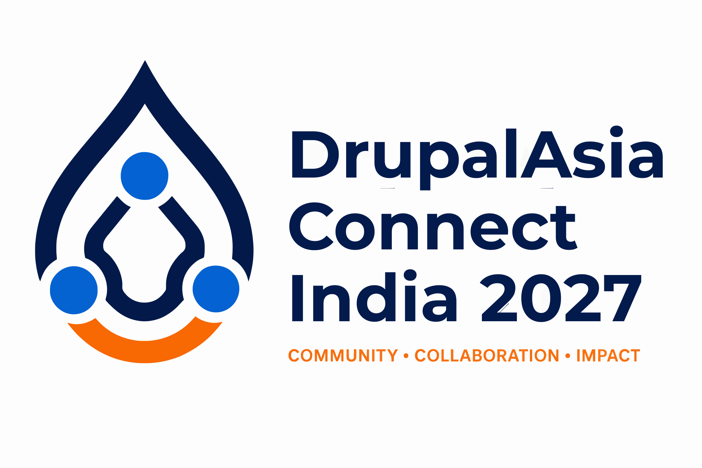

Moderator
Piyuesh Kumar
QED42
Guiding a practical conversation across technology, public systems, and citizen experience.

Get ticketsOpen source, Drupal, and AI. How can they work together to make public services easier to find, understand, and use, without losing trust or accountability?
Digital Public Infrastructure creates shared foundations for identity, payments, credentials, data exchange and public services. But the infrastructure itself does not guarantee that someone can discover a service, understand whether they qualify, or complete the next step.
This panel explores the space between public infrastructure and people: trustworthy information, accessible experiences, multilingual services, and the responsible use of AI.
What becomes possible when public systems, mature open-source platforms, and AI are designed to work together?
Each technology has a different job. The opportunity is to connect them without confusing their responsibilities.
Shared systems and APIs for identity, consent, payments, credentials, and service delivery.
Structured, governed, multilingual information and interoperable citizen-facing experiences.
Intent-based discovery, grounded explanations, language and voice interfaces, and carefully authorized actions.
A simple question can involve several departments, eligibility rules, languages, and steps.
A small business owner asks
“I’ve started a small business. Which registrations, programmes, or benefits should I know about?”
Real questions about public value, architecture, access, and responsibility. Not a platform pitch.
Where can open source contribute more to public digital systems?
Public valueWhere can Drupal add value without replacing the underlying DPI?
ArchitectureHow can people find services by intent, not department?
AccessHow do we make multilingual AI explanations accurate and accessible?
AccessWhat consent, evidence, and safeguards should citizen-facing AI agents require?
ResponsibilityWhat could a useful, responsibly scoped pilot look like?
Next stepsWe are bringing together perspectives from public infrastructure, open source, AI, and governance. Panelist announcements will follow.
QED42
Guiding a practical conversation across technology, public systems, and citizen experience.
We’re shaping a balanced discussion with practitioners from different disciplines. Names and profiles will be added as participation is confirmed.
Leave with a clearer view of where open-source platforms, Drupal, and AI can support public infrastructure, and what it takes to keep the experience trustworthy, inclusive, and accountable.